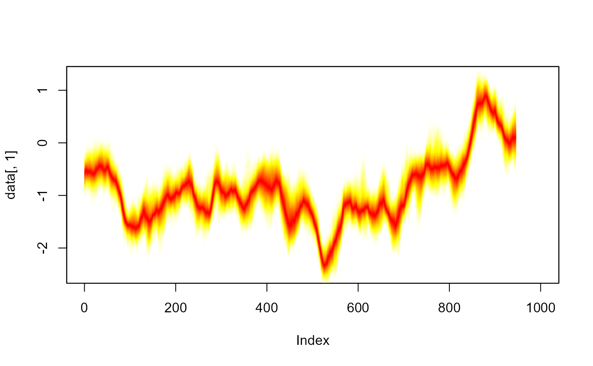
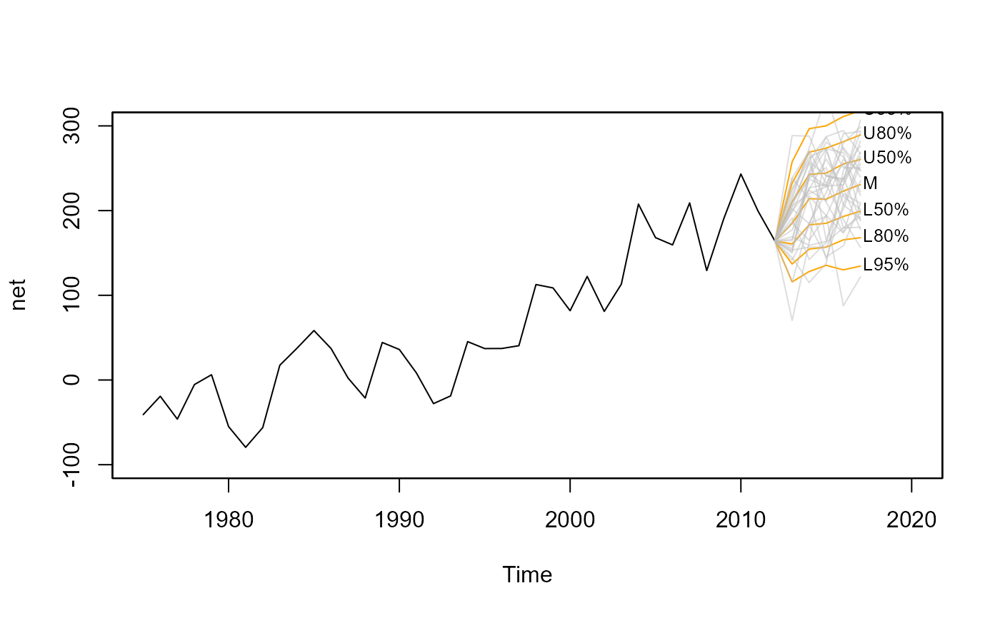
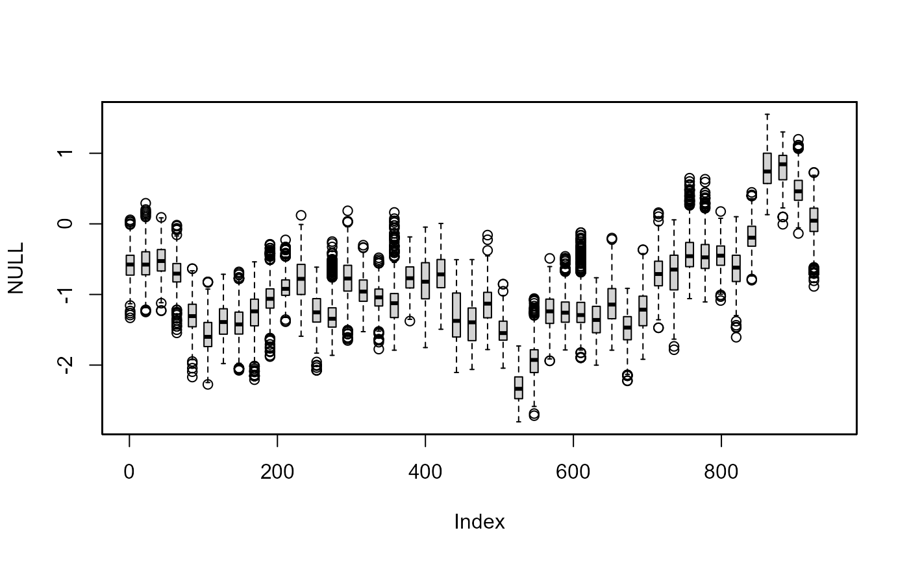
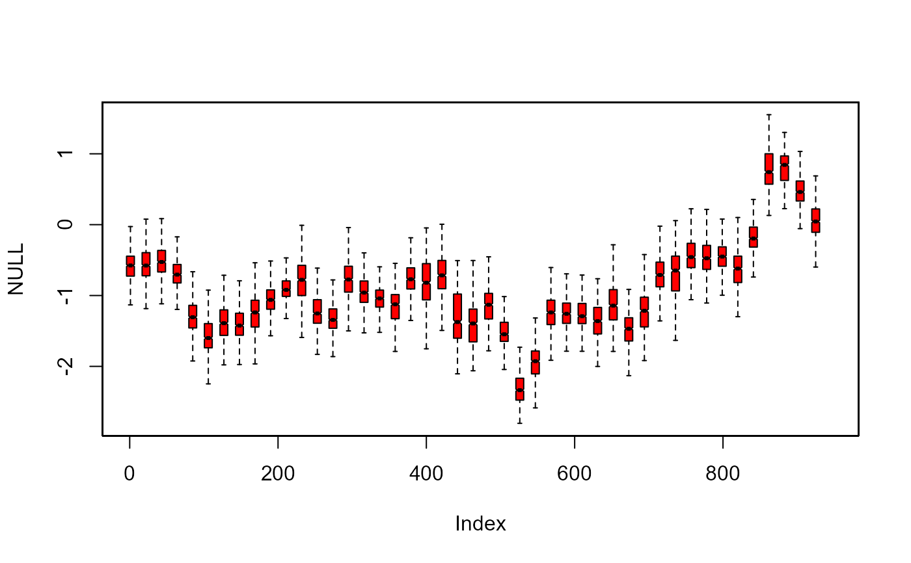
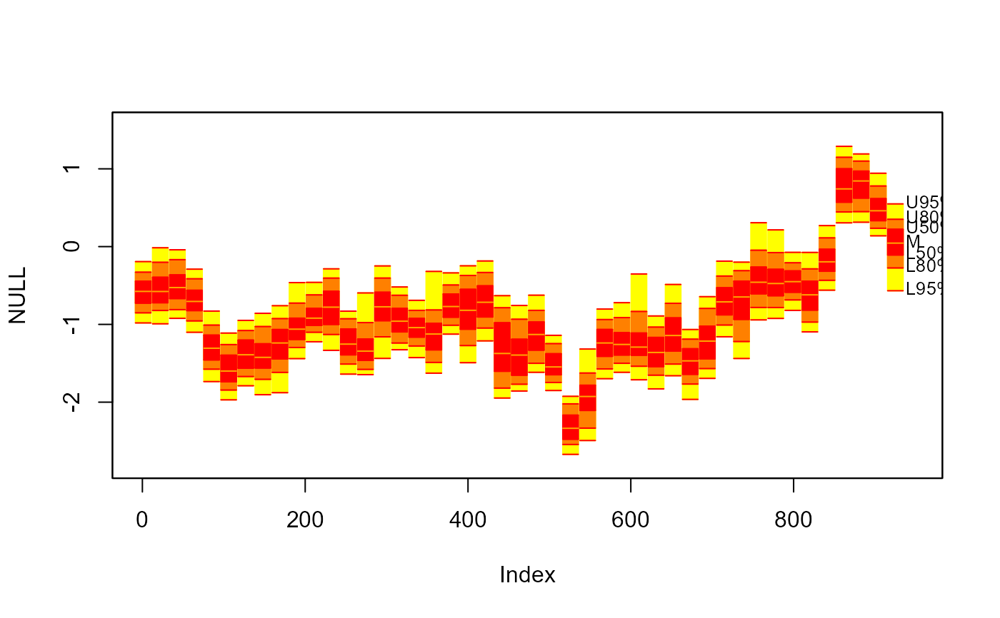
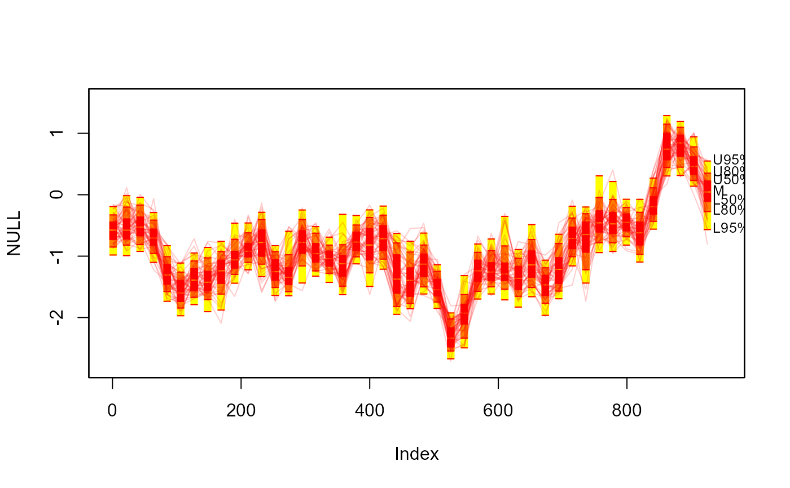

fan.RdVisualise sequential distributions using a range of plotting styles.
fan(data = NULL, data.type="simulations", style = "fan", type = "percentile",
probs = if(type=="percentile") seq(0.01, 0.99, 0.01) else c(0.5, 0.8, 0.95),
start = 1, frequency = 1, anchor = NULL, anchor.time=NULL,
fan.col = heat.colors, alpha = if (style == "spaghetti") 0.5 else 1,
n.fan = NULL,
ln = if(length(probs)<10) probs else
probs[round(probs,2) %in% round(seq(0.1, 0.9, 0.1),2)],
ln.col = if(style=="spaghetti") "gray" else NULL,
med.ln = if(type=="interval") TRUE else FALSE,
med.col= "orange",
rlab = ln, rpos = 4, roffset = 0.1, rcex = 0.8, rcol = NULL,
llab = FALSE, lpos = 2, loffset = roffset, lcex = rcex, lcol = rcol,
upplab = "U", lowlab = "L", medlab=if(type == "interval") "M" else NULL,
n.spag = 30,
space = if(style=="boxplot") 1/frequency else 0.9/frequency,
add = FALSE, ylim = range(data)*0.8, ...)
fan0(data = NULL, data.type = "simulations", style = "fan", type = "percentile",
probs = if(type=="percentile") seq(0.01, 0.99, 0.01) else c(0.5, 0.8, 0.95),
start = 1, frequency = 1, anchor = NULL, anchor.time=NULL,
fan.col = heat.colors, alpha = if (style == "spaghetti") 0.5 else 1,
n.fan = NULL,
ln = NULL,
ln.col = if(style=="spaghetti") "gray" else NULL,
med.ln = if(type=="interval") TRUE else FALSE,
med.col= "orange",
rlab = ln, rpos = 4, roffset = 0.1, rcex = 0.8, rcol = NULL,
llab = FALSE, lpos = 2, loffset = roffset, lcex = rcex, lcol = rcol,
upplab = "U", lowlab = "L", medlab=if(type == "interval") "M" else NULL,
n.spag = 30,
space = if(style=="boxplot") 1/frequency else 0.9/frequency,
add = TRUE, ylim = range(data)*0.8, ...)Set of sequential simulation data, where rows represent simulation number and columns represent some form of time index.
If data.type = "values", data must instead be a set of quantile values by rows for a set of probabilities (which need to be provided in probs and by column for some form of time index.
Data can take multiple classes, where the contents are converted to a matrix. If the input is a mts or zoo, the time series properties will be inherted (and start and frequency arguments will be ignored).
Indicates if data are sets of pre-calculated values based for defined probabilities data.type = "values" or simulated data data.type = "simulations". That later is the default.
Plot style, choose from fan (default), spaghetti boxplot or boxfan. See Examples and Details Sections for further explanation.
Type of percentiles to plot in fan or boxfan. Choose from, percentile (default) or interval.
Probabilities related to percentiles or prediction intervals to be plotted (dependent on the type function. These values control the number of shades used in the fan or boxfan. These must be between 0 and 100 (inclusive) or 0 and 1. Percentiles greater than 50 (or 0.5), if not given, are automatically calculated as 100-p, to ensure symmetric fan. Values can be non-integers. Default to single percentile values when type="percetinle" and the 50th, 80th and 95th prediction interval when type="interval" is set.
The time of the first distribution in sims. Similar to use in ts.
The number of distribution in sims per unit of time in sims. Similar to use in ts.
Optional data value to anchor a forecast fan on. Typically this will be the last observation of the observed data series.
Optional data value for the time of the anchor. Useful for irregular time series.
Palette of colours used in the fan or boxfan.
The number of colours to use in the fan.
Factor modifying the opacity alpha; typically in [0,1].
Vector of number to plot contour lines on-top fan or boxfan. Must correspond to calculated percentiles in probs. By default for fan takes either every percentile or prediction interval given in the probs argument (if less then 10) or, when there are more than 10 probs passed, the either every decile or every prediction interval that are a multiple of 10 and given in probs. No lines plotted by default for fan0
Add a median line to fan. Might be of particular use if type="interval". Only works when data.type = "simulations" and one of fan, boxfan or spaghetti styles.
Line colour to be imposed on top of the fan. By default takes the darkest colour from fan.col argument, unless style="spaghetti"
Median Line colour. By default this is set to the first colour in fan.col. Users might wish to change to highlight the median.
Vector of labels at the end (right) of corresponding percentiles or prediction intervals of the fan or boxfan. Must be in calculated in the probs argument. By default plotted alongside values provided to the ln argument.
Position of right labels for the fan or boxfan. See text.
Offset of right labels for the fan or boxfan. See text.
Text size of right labels for the fan or boxfan. See text.
Colour of text for right labels for the fan or boxfan. See text.
Can take either 1) a TRUE or FALSE value to plot label at the start (right) of the corresponding percentiles or prediction intervals given in rlab, default is FALSE or 2) a original vector of percentiles or prediction intervals. Must be in calculated in the probs argument. Only works for fan or boxfan styles.
Position of left labels for the fan or boxfan. See text.
Offset of left labels for the fan or boxfan.By default takes the same value as roffset. See text.
Text size of left labels for the fan or boxfan. By default takes the same value as rex. See text.
Colour of text for left labels for the fan or boxfan. By default takes the same value as rcol. See text.
Prefix character string for upper labels to be used for the fan or boxfan when type="interval".
Prefix character string for lower labels to be used for the fan or boxfan when type="interval" .
Character string for median label.
Number of simulations to plot in the spaghetti plot.
Space between boxes in the boxfan plot.
Add to active plot. By default FALSE for fan and TRUE for fan0.
Passed to plot when add = TRUE.
Additional arguments passed to boxplot for fan and to plot for fan0.
Visualise sequential distributions using a range of plotting styles. Sequential distribution data can be input as either simulations or pre-computed values over time (columns). For the later, the user should declare input data as percentiles by setting data.type = "values". Plots are added to existing graphic devices. Users can choose from four different styles.
The fan and boxfan style plot distributions based on used-defined shading scheme, controlled by the fan.col argument. Additional lines and text are added to illustrate major contours on the probability distribution. Lines and labels can be suppressed by adding ln = NULL and rlab = NULL. Labels to the left of the fan can also be specified using the llab argument. Colours are by default taken from the heat.colors palette. Alternatives can be specified using fan.col (see the example below). The joining of a forecast fan to data is controlled be the anchor argument.
The spaghetti style, plots random draws (when data.type = "simulations" is set) along the sequence of distributions. The number of draws is controlled by the n.spag argument. The transparency of the lines is controlled by alpha.
The boxplot style, adds a box plot for simulated data at the appropriate location, according to the start and frquency arguments. Gaps between box plots are controlled by space argument. Additional arguments are passed to boxplot.
See details
Abel, G. J. (2015). fanplot: An R Package for visualising sequential distributions. The R Journal 7 (2) 15--23.
##
## Basic Fan: fan0()
##
fan0(th.mcmc)

##
## Basic Fan: fan()
##
# empty plot
plot(NULL, xlim = c(1, 945), ylim = range(th.mcmc)*0.85)
# add fan
fan(th.mcmc)
##
## 20 or so examples of fan charts and
## spaghetti plots based on the th.mcmc object
##
## Make sure you have zoo, tsbugs, RColorBrewer and
## colorspace packages installed
##
# \dontrun{
# demo("sv_fan", "fanplot")
# }
##
## Fans for forecasted values
##
# \dontrun{
#create time series
net <- ts(ips$net, start=1975)
# fit model
library("forecast")
#> Registered S3 method overwritten by 'quantmod':
#> method from
#> as.zoo.data.frame zoo
m <- auto.arima(net)
# plot in forecast package (limited customisation possible)
plot(forecast(m, h=5))
# another plot in forecast (with some customisation, no
# labels or anchoring possible at the moment)
plot(forecast(m, h=5, level=c(50,80,95)),
shadecols=rev(heat.colors(3)))
# simulate future values
mm <- matrix(NA, nrow=1000, ncol=5)
for(i in 1:1000)
mm[i,] <- simulate(m, nsim=5)
# interval fan chart
plot(net, xlim=c(1975,2020), ylim=c(-100,300))
fan(mm, type="interval", start=2013)
# anchor fan chart
plot(net, xlim=c(1975,2020), ylim=c(-100,300))
fan(mm, type="interval", start=2013,
anchor=net[time(net)==2012])
# anchor spaghetti plot with underlying fan chart
plot(net, xlim=c(1975,2020), ylim=c(-100,300))
fan(mm, type="interval", start=2013,
anchor=net[time(net)==2012], alpha=0, ln.col="orange")
fan(mm, type="interval", start=2013,
anchor=net[time(net)==2012], alpha=0.5, style="spaghetti")

# }
##
## Box Plots
##
# sample every 21st day of theta_t
th.mcmc21 <- th.mcmc[, seq(1, 945, 21)]
plot(NULL, xlim = c(1, 945), ylim = range(th.mcmc21))
fan(th.mcmc21, style = "boxplot", frequency = 1/21)

# additional arguments for boxplot
plot(NULL, xlim = c(1, 945), ylim = range(th.mcmc21))
fan(th.mcmc21, style = "boxplot", frequency = 1/21,
outline = FALSE, col = "red", notch = TRUE)

##
## Fan Boxes
##
plot(NULL, xlim = c(1, 945), ylim = range(th.mcmc21))
fan(th.mcmc21, style = "boxfan", type = "interval", frequency = 1/21)

# more space between boxes
plot(NULL, xlim = c(1, 945), ylim = range(th.mcmc21))
fan(th.mcmc21, style = "boxfan", type = "interval",
frequency = 1/21, space = 10)
# overlay spaghetti
fan(th.mcmc21, style = "spaghetti",
frequency = 1/21, n.spag = 50, ln.col = "red", alpha=0.2)
